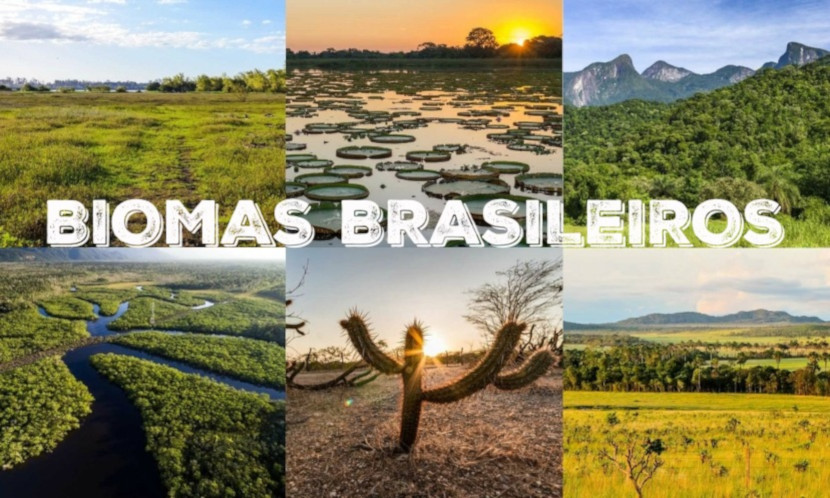

O tempo seco que vem em épocas como o inverno traz também um grande perigo: as queimadas, que resultam na queima de grandes extensões de vegetação. O risco de incêndios ameaça não apenas áreas de preservação isoladas, mas também centros urbanos, já que 90% dos focos começam por razões humanas. No Dia de Proteção às Florestas, aprenda a diminuir os riscos e entenda como evitar as queimadas, que podem pôr em risco a vida de muita gente.
Englobam as Unidades de Conservação (UCs), mosaicos e corredores ecológicos, espaços considerados essenciais, do ponto de vista econômico, por conservarem a sociobiodiversidade, além de serem provedores de serviços ambientais e geradores de oportunidades de negócios. Áreas Protegidas da Amazônia (Arpa) são responsáveis pela produção direta de parte da água destinada ao consumo humano, bem como retiram bilhões de toneladas de carbono na atmosfera.
O Brasil é formado por seis biomas de características distintas: Amazônia, Caatinga, Cerrado, Mata Atlântica, Pampa e Pantanal. Cada um desses ambientes abriga diferentes tipos de vegetação e de fauna. Como a vegetação é um dos componentes mais importantes da biota, seu estado de conservação e de continuidade definem a existência ou não de hábitats para as espécies, a manutenção de serviços ambientais e o fornecimento de bens essenciais à sobrevivência de populações humanas.
Procure locais específicos de descarte do resto de cigarro, como coletores espalhados pela cidade. Ou simplesmente jogue-os apagados em uma lata de lixo, mas nunca no chão muito menos próximo a grama ou vegetação de qualquer tipo a fim de evitar o início de um incêndio.
Soltar balões é crime previsto no Art. 42 da Lei de Crimes Ambientais. A pena para quem comete esse crime é de 1 a 3 anos de detenção, além disso há uma multa. Ela pode ainda ser acumulativa em caso de reincidência. Balões são um dos principais motivos para enormes incêndios florestais, e põem em risco a vida de centenas de pessoas se caírem em áreas urbanas, onde podem interromper até mesmo o fornecimento de energia elétrica por danificarem fios. Evitar balões é uma das principais formas de como evitar as queimadas.
É comum em celebrações de São João que sejam acesas enormes fogueiras, mas elas são um risco. Principalmente se forem montadas em áreas próximas a vegetação seca e pastagens, o que pode ocasionar em um gigantesco incêndio.
Para se desfazer de lixo, muitas pessoas preferem queimá-lo a descartá-lo da forma correta com o auxílio de limpeza urbana. Não faça isso. Descarte o lixo de forma correta.
Da mesma forma, realize o descarte de latas de alumínio e pedaços de vidro de meios corretos. Esses objetos podem esquentar ou refletir raios em folhas de jornal, por exemplo, e iniciar fagulhas que se transformam em focos de incêndio maiores futuramente.
Se você mora em áreas com alta vegetação próxima a sua casa, diminua o risco de queimadas capinando faixas de terra próximas a sua propriedade. O risco de queimadas é maior em propriedades cercadas com vegetação bruta, sem qualquer contenção.
Sempre que puder, molhe faixas de terra e grama que estiverem secas próximas de sua residência. Dessa forma, é possível diminuir as chances de alguma faísca começar um incêndio de grandes proporções em áreas urbanas ou de preservação
Grau de importância crescente têm os corredores ecológicos, que conectam os fragmentos de áreas naturais e são definidos no Sistema Nacional de Unidades de Conservação (SNUC) como porções de ecossistemas naturais ou seminaturais, ligando UCs, possibilitam o fluxo de genes e o movimento da biota - conjunto de seres vivos de um ecossistema, o que inclui a flora, a fauna, os fungos e outros grupos de organismos -, facilitando a dispersão de espécies e a recolonização de áreas degradadas, e ainda a manutenção de populações que demandam, para sua sobrevivência, de áreas com extensão maior do que aquelas das unidades individuais. Para viabilizar a manutenção e conservação de todas as áreas protegidas, o governo lança mão de várias estratégias políticas, contidas em diferentes instrumentos, como o Cadastro Nacional de UCs, o Plano Estratégico Nacional de Áreas Protegidas (PNAP) e programas e projetos de alcance nacional.
A Amazônia é quase mítica: um verde e vasto mundo de águas e florestas, onde as copas de árvores imensas escondem o úmido nascimento, reprodução e morte de mais de um-terço das espécies que vivem sobre a Terra. Os números são igualmente monumentais. A Amazônia é o maior bioma do Brasil: num território de 4,196.943 milhões de km2 (IBGE,2004), crescem 2.500 espécies de árvores (ou um-terço de toda a madeira tropical do mundo) e 30 mil espécies de plantas (das 100 mil da América do Sul). A bacia amazônica é a maior bacia hidrográfica do mundo: cobre cerca de 6 milhões de km2 e e tem 1.100 afluentes. Seu principal rio, o Amazonas, corta a região para desaguar no Oceano Atlântico, lançando ao mar cerca de 175 milhões de litros d’água a cada segundo. As estimativas situam a região como a maior reserva de madeira tropical do mundo. Seus recursos naturais – que, além da madeira, incluem enormes estoques de borracha, castanha, peixe e minérios, por exemplo – representam uma abundante fonte de riqueza natural. A região abriga também grande riqueza cultural, incluindo o conhecimento tradicional sobre os usos e a forma de explorar esses recursos naturais sem esgotá-los nem destruir o habitat natural. Toda essa grandeza não esconde a fragilidade do escossistema local, porém. A floresta vive a partir de seu próprio material orgânico, e seu delicado equilíbrio é extremamente sensível a quaisquer interferências. Os danos causados pela ação antrópica são muitas vezes irreversíveis.
A caatinga ocupa uma área de cerca de 844.453 quilômetros quadrados, o equivalente a 11% do território nacional. Engloba os estados Alagoas, Bahia, Ceará, Maranhão, Pernambuco, Paraíba, Rio Grande do Norte, Piauí, Sergipe e o norte de Minas Gerais. Rico em biodiversidade, o bioma abriga 178 espécies de mamíferos, 591 de aves, 177 de répteis, 79 espécies de anfíbios, 241 de peixes e 221 abelhas. Cerca de 27 milhões de pessoas vivem na região, a maioria carente e dependente dos recursos do bioma para sobreviver. A caatinga tem um imenso potencial para a conservação de serviços ambientais, uso sustentável e bioprospecção que, se bem explorado, será decisivo para o desenvolvimento da região e do país. A biodiversidade da caatinga ampara diversas atividades econômicas voltadas para fins agrosilvopastoris e industriais, especialmente nos ramos farmacêutico, de cosméticos, químico e de alimentos. Apesar da sua importância, o bioma tem sido desmatado de forma acelerada, principalmente nos últimos anos, devido principalmente ao consumo de lenha nativa, explorada de forma ilegal e insustentável, para fins domésticos e indústrias, ao sobrepastoreio e a conversão para pastagens e agricultura. Frente ao avançado desmatamento que chega a 46% da área do bioma, segundo dados do Ministério do Meio Ambiente (MMA), o governo busca concretizar uma agenda de criação de mais unidades de conservação federais e estaduais no bioma, além de promover alternativas para o uso sustentável da sua biodiversidade. Devemos ressaltar que o nível de conhecimento sobre o bioma, sua biodiversidade, espécies ameaçadas e sobreexplotadas, áreas prioritárias, unidades de conservação e alternativas de manejo sustentável aumentou nos últimos anos, fruto de uma série de diagnósticos produzidos pelo MMA e parceiros. Grande parte destes diagnósticos pode ser acessados no site do Ministério: Legislação e Publicações. Este ano estamos iniciando o processo de atualização das áreas prioritárias para a caatinga, medida fundamental para direcionar as políticas para o bioma.
O Cerrado é o segundo maior bioma da América do Sul, ocupando uma área de 2.036.448 km2, cerca de 22% do território nacional. A sua área contínua incide sobre os estados de Goiás, Tocantins, Mato Grosso, Mato Grosso do Sul, Minas Gerais, Bahia, Maranhão, Piauí, Rondônia, Paraná, São Paulo e Distrito Federal, além dos encraves no Amapá, Roraima e Amazonas. Neste espaço territorial encontram-se as nascentes das três maiores bacias hidrográficas da América do Sul (Amazônica/Tocantins, São Francisco e Prata), o que resulta em um elevado potencial aquífero e favorece a sua biodiversidade. Considerado como um hotspots mundiais de biodiversidade, o Cerrado apresenta extrema abundância de espécies endêmicas e sofre uma excepcional perda de habitat. Do ponto de vista da diversidade biológica, o Cerrado brasileiro é reconhecido como a savana mais rica do mundo, abrigando 11.627 espécies de plantas nativas já catalogadas. Existe uma grande diversidade de habitats, que determinam uma notável alternância de espécies entre diferentes fitofisionomias. Cerca de 199 espécies de mamíferos são conhecidas, e a rica avifauna compreende cerca de 837 espécies. Os números de peixes (1200 espécies), répteis (180 espécies) e anfíbios (150 espécies) são elevados. O número de peixes endêmicos não é conhecido, porém os valores são bastante altos para anfíbios e répteis: 28% e 17%, respectivamente. De acordo com estimativas recentes, o Cerrado é o refúgio de 13% das borboletas, 35% das abelhas e 23% dos cupins dos trópicos. Contudo, inúmeras espécies de plantas e animais correm risco de extinção. Estima-se que 20% das espécies nativas e endêmicas já não ocorram em áreas protegidas e que pelo menos 137 espécies de animais que ocorrem no Cerrado estão ameaçadas de extinção. Depois da Mata Atlântica, o Cerrado é o bioma brasileiro que mais sofreu alterações com a ocupação humana. Com a crescente pressão para a abertura de novas áreas, visando incrementar a produção de carne e grãos para exportação, tem havido um progressivo esgotamento dos recursos naturais da região. Nas três últimas décadas, o Cerrado vem sendo degradado pela expansão da fronteira agrícola brasileira. Além disso, o bioma Cerrado é palco de uma exploração extremamente predatória de seu material lenhoso para produção de carvão.
A Mata Atlântica é composta por formações florestais nativas (Floresta Ombrófila Densa; Floresta Ombrófila Mista, também denominada de Mata de Araucárias; Floresta Ombrófila Aberta; Floresta Estacional Semidecidual; e Floresta Estacional Decidual), e ecossistemas associados (manguezais, vegetações de restingas, campos de altitude, brejos interioranos e encraves florestais do Nordeste). Originalmente, o bioma ocupava mais de 1,3 milhões de km² em 17 estados do território brasileiro, estendendo-se por grande parte da costa do país. Porém, devido à ocupação e atividades humanas na região, hoje resta cerca de 29% de sua cobertura original. Além de ser uma das regiões mais ricas do mundo em biodiversidade, a Mata Atlântica fornece serviços ecossistêmicos essenciais para os 145 milhões de brasileiros que vivem nela. As florestas e demais ecossistemas que compõem a Mata Atlântica são responsáveis pela produção, regulação e abastecimento de água; regulação e equilíbrio climáticos; proteção de encostas e atenuação de desastres; fertilidade e proteção do solo; produção de alimentos, madeira, fibras, óleos e remédios; além de proporcionar paisagens cênicas e preservar um patrimônio histórico e cultural imenso.
O Pampa está restrito ao estado do Rio Grande do Sul, onde ocupa uma área de 176.496 km² (IBGE, 2004). Isto corresponde a 63% do território estadual e a 2,07% do território brasileiro. As paisagens naturais do Pampa são variadas, de serras a planícies, de morros rupestres a coxilhas. O bioma exibe um imenso patrimônio cultural associado à biodiversidade. As paisagens naturais do Pampa se caracterizam pelo predomínio dos campos nativos, mas há também a presença de matas ciliares, matas de encosta, matas de pau-ferro, formações arbustivas, butiazais, banhados, afloramentos rochosos, etc. Por ser um conjunto de ecossistemas muito antigos, o Pampa apresenta flora e fauna próprias e grande biodiversidade, ainda não completamente descrita pela ciência. Estimativas indicam valores em torno de 3000 espécies de plantas, com notável diversidade de gramíneas, são mais de 450 espécies (campim-forquilha, grama-tapete, flechilhas, brabas-de-bode, cabelos de-porco, dentre outras). Nas áreas de campo natural, também se destacam as espécies de compostas e de leguminosas (150 espécies) como a babosa-do-campo, o amendoim-nativo e o trevo-nativo. Nas áreas de afloramentos rochosos podem ser encontradas muitas espécies de cactáceas. Entre as várias espécies vegetais típicas do Pampa vale destacar o Algarrobo (Prosopis algorobilla) e o Nhandavaí (Acacia farnesiana) arbusto cujos remanescentes podem ser encontrados apenas no Parque Estadual do Espinilho, no município de Barra do Quaraí. A fauna é expressiva, com quase 500 espécies de aves, dentre elas a ema (Rhea americana), o perdigão (Rynchotus rufescens), a perdiz (Nothura maculosa), o quer-quero (Vanellus chilensis), o caminheiro-de-espora (Anthus correndera), o joão-de-barro (Furnarius rufus), o sabiá-do-campo (Mimus saturninus) e o pica-pau do campo (Colaptes campestres). Também ocorrem mais de 100 espécies de mamíferos terrestres, incluindo o veado-campeiro (Ozotoceros bezoarticus), o graxaim (Pseudalopex gymnocercus), o zorrilho (Conepatus chinga), o furão (Galictis cuja), o tatu-mulita (Dasypus hybridus), o preá (Cavia aperea) e várias espécies de tuco-tucos (Ctenomys sp). O Pampa abriga um ecossistema muito rico, com muitas espécies endêmicas tais como: Tuco-tuco (Ctenomys flamarioni), o beija-flor-de-barba-azul (Heliomaster furcifer); o sapinho-de-barriga-vermelha (Melanophryniscus atroluteus) e algumas ameaçadas de extinção tais como: o veado campeiro (Ozotocerus bezoarticus), o cervo-do-pantanal (Blastocerus dichotomus), o caboclinho-de-barriga-verde (Sporophila hypoxantha) e o picapauzinho-chorão (Picoides mixtus) (Brasil, 2003). Trata-se de um patrimônio natural, genético e cultural de importância nacional e global. Também é no Pampa que fica a maior parte do aquífero Guarani. Desde a colonização ibérica, a pecuária extensiva sobre os campos nativos tem sido a principal atividade econômica da região. Além de proporcionar resultados econômicos importantes, tem permitido a conservação dos campos e ensejado o desenvolvimento de uma cultura mestiça singular, de caráter transnacional representada pela figura do gaúcho. A perda de biodiversidade compromete o potencial de desenvolvimento sustentável da região, seja perda de espécies de valor forrageiro, alimentar, ornamental e medicinal, seja pelo comprometimento dos serviços ambientais proporcionados pela vegetação campestre, como o controle da erosão do solo e o sequestro de carbono que atenua as mudanças climáticas, por exemplo. No Brasil, o bioma Pampa está restrito ao Rio Grande do Sul, onde ocupa 178.243 km2 – o que corresponde a 63% do território estadual e a 2,07% do território nacional. O bioma exibe um imenso patrimônio cultural associado à biodiversidade. Em sua paisagem predominam os campos, entremeados por capões de mata, matas ciliares e banhados. A estrutura da vegetação dos campos – se comparada à das florestas e das savanas – é mais simples e menos exuberante, mas não menos relevante do ponto de vista da biodiversidade e dos serviços ambientais. Ao contrário: os campos têm uma importante contribuição no sequestro de carbono e no controle da erosão, além de serem fonte de variabilidade genética para diversas espécies que estão na base de nossa cadeia alimentar.
O bioma Pantanal é considerado uma das maiores extensões úmidas contínuas do planeta. Este bioma continental é considerado o de menor extensão territorial no Brasil, entretanto este dado em nada desmerece a exuberante riqueza que o referente bioma abriga. A sua área aproximada é 150.355 km² (IBGE,2004), ocupando assim 1,76% da área total do território brasileiro. Em seu espaço territorial o bioma, que é uma planície aluvial, é influenciado por rios que drenam a bacia do Alto Paraguai. O Pantanal sofre influência direta de três importantes biomas brasileiros: Amazônia, Cerrado e Mata Atlântica. Além disso sofre influência do bioma Chaco (nome dado ao Pantanal localizado no norte do Paraguai e leste da Bolívia). Uma característica interessante desse bioma é que muitas espécies ameaçadas em outras regiões do Brasil persistem em populações avantajadas na região, como é o caso do tuiuiú – ave símbolo do Pantanal. Estudos indicam que o bioma abriga os seguintes números de espécies catalogadas: 263 espécies de peixes, 41 espécies de anfíbios, 113 espécies de répteis, 463 espécies de aves e 132 espécies de mamíferos sendo 2 endêmicas. Segundo a Embrapa Pantanal, quase duas mil espécies de plantas já foram identificadas no bioma e classificadas de acordo com seu potencial, e algumas apresentam vigoroso potencial medicinal. Apesar de sua beleza natural exuberante o bioma vem sendo muito impactado pela ação humana, principalmente pela atividade agropecuária, especialmente nas áreas de planalto adjacentes do bioma. De acordo com o Programa de Monitoramento dos Biomas Brasileiros por Satélite – PMDBBS, realizado com imagens de satélite de 2009, o bioma Pantanal mantêm 83,07% de sua cobertura vegetal nativa. Assim como a fauna e flora da região são admiráveis, há de se destacar a rica presença das comunidades tradicionais como as indígenas, quilombolas, os coletores de iscas ao longo do Rio Paraguai, comunidade Amolar e Paraguai Mirim, dentre outras. No decorrer dos anos essas comunidades influenciaram diretamente na formação cultural da população pantaneira. Apenas 4,6% do Pantanal encontram-se protegidos por unidades de conservação, dos quais 2,9% correspondem a UCs de proteção integral e 1,7% a UCs de uso sustentável (BRASIL, 2015).
